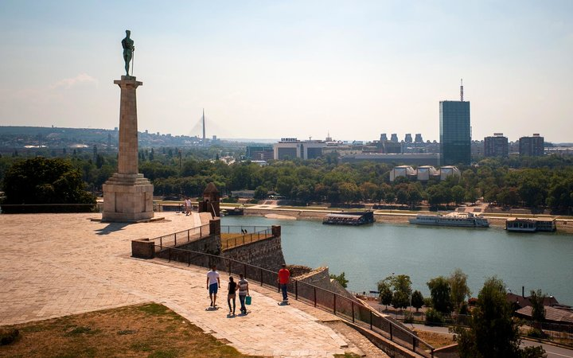

Best Places to Travel  Belgrade, Serbia Since the end of the Yugoslav wars, Belgrade has attracted steady investment—its graffiti-covered neighborhoods are now full of restaurants and bars. You’ll find hearty platters of cevapi—smoky sausages without casing—and stuffed somborka peppers at Sokace, paprika-laden kebabs at Tri Šešira, and pan-Latin tapas at Toro. But the biggest draw is the growing craft-beer scene (the city has 37 breweries). Don’t miss the Kabinet Supernova IPA at Prohibicija in the bar-filled Savamala district, as well as Kas’s full-bodied pale ales and Salto’s IPA at Bajloni, set in a 100-year-old brewery space in Cetinjska. —Govind Dhar Previous Next